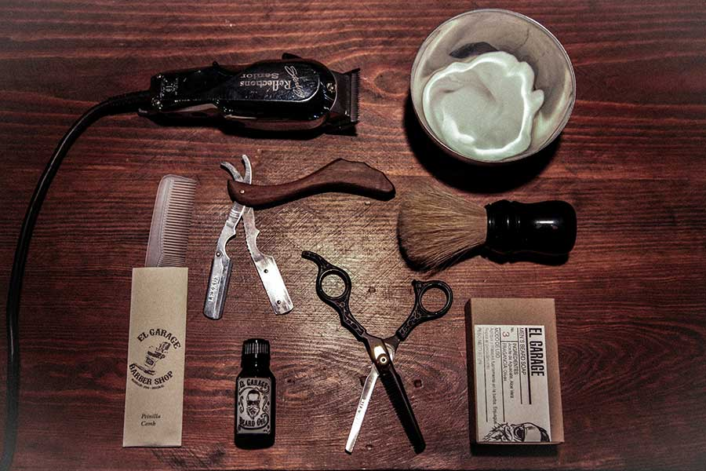
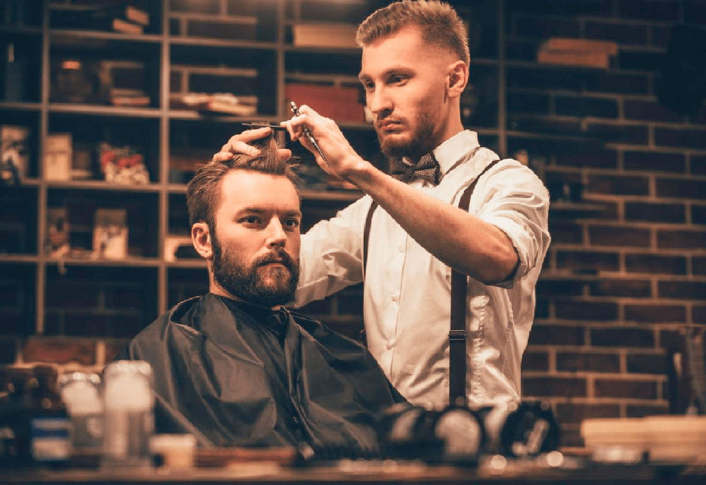
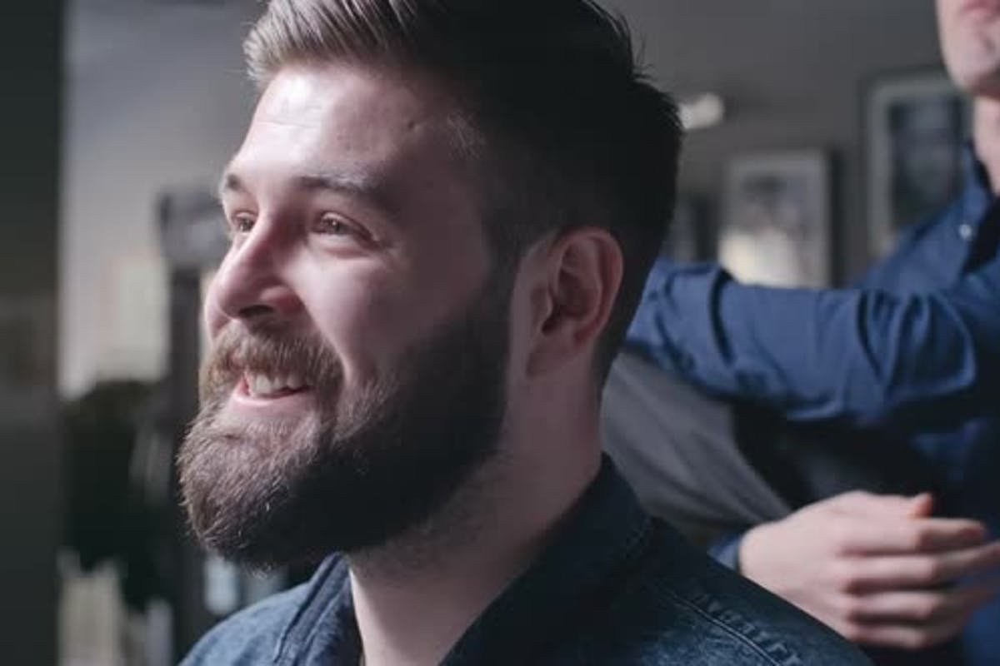

Herramientas de trabajo
Por un momento, piensa en todos los elementos que usas a diario en tu peluquería…¿Listo? Ahora que te diste cuenta que la lista es bastante larga, debemos contarte que es posible que te hagan falta algunos instrumentos, así que dale un vistazo a todo lo que tenemos en este artículo. Cuando entras en una peluquería, desde la bata que te facilitan, pasando por el lavado del cabello hasta cuando te lo secan y te aplican un serum antiruptura… pasos que podríamos ir enumerando y que acabarían siendo interminables.
Barberos profesionales
Por un momento, piensa en todos los elementos que usas a diario en tu peluquería…¿Listo? Ahora que te diste cuenta que la lista es bastante larga, debemos contarte que es posible que te hagan falta algunos instrumentos, así que dale un vistazo a todo lo que tenemos en este artículo. Cuando entras en una peluquería, desde la bata que te facilitan, pasando por el lavado del cabello hasta cuando te lo secan y te aplican un serum antiruptura… pasos que podríamos ir enumerando y que acabarían siendo interminables.
Alta atencion al cliente
Por un momento, piensa en todos los elementos que usas a diario en tu peluquería…¿Listo? Ahora que te diste cuenta que la lista es bastante larga, debemos contarte que es posible que te hagan falta algunos instrumentos, así que dale un vistazo a todo lo que tenemos en este artículo. Cuando entras en una peluquería, desde la bata que te facilitan, pasando por el lavado del cabello hasta cuando te lo secan y te aplican un serum antiruptura… pasos que podríamos ir enumerando y que acabarían siendo interminables.